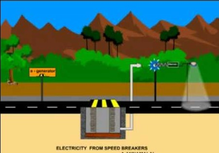
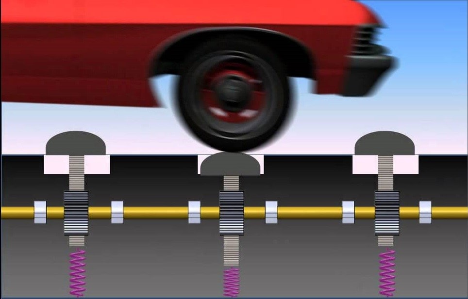

Since electricity plays major role in our day to day life, it should be produced in a very large quantity to serve our basic needs. But producing electricity is not a very easy task. We may face many problems like water scarcity may cause difficulties in hydroelectric power generation, wind is unpredictable in the case of windmills and sunlight is not always available for solar panels. It becomes difficult to generate electricity in these cases. So by using the speed breaker these problems maybe reduced to some extent.
 